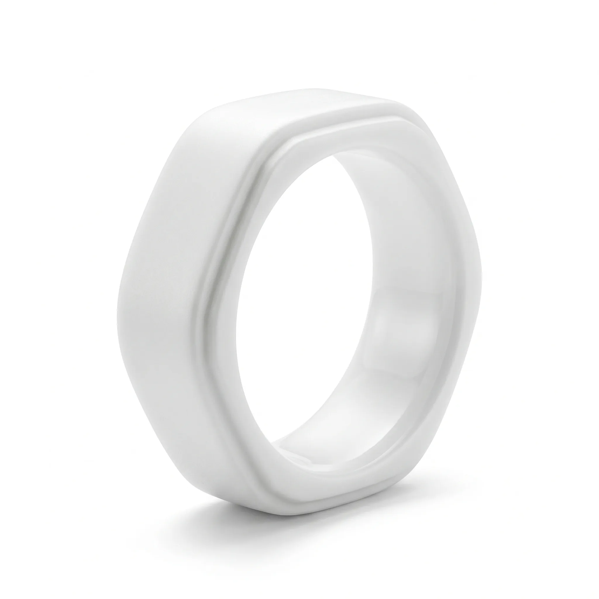
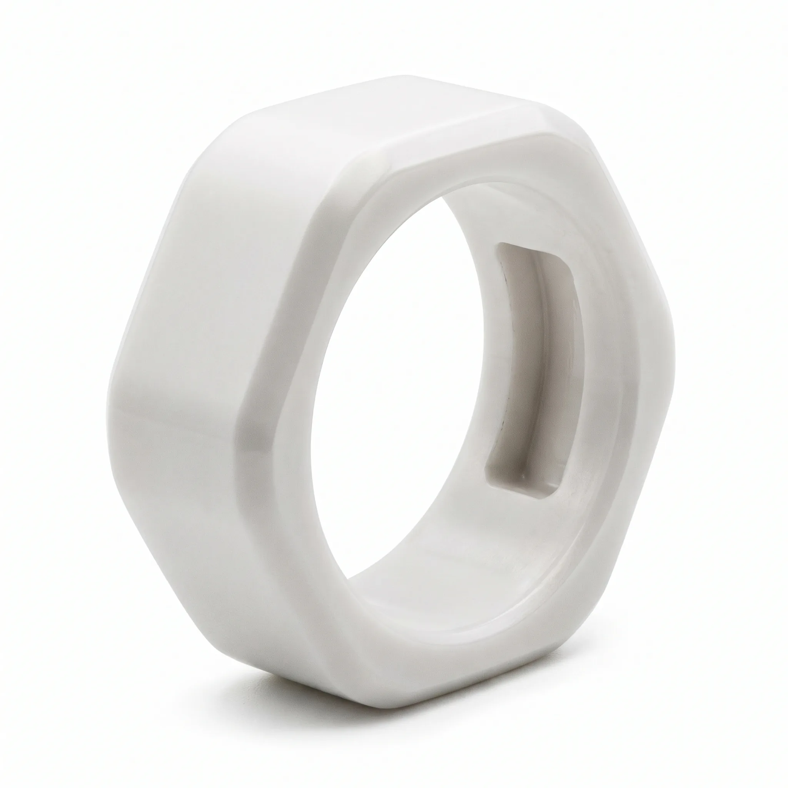
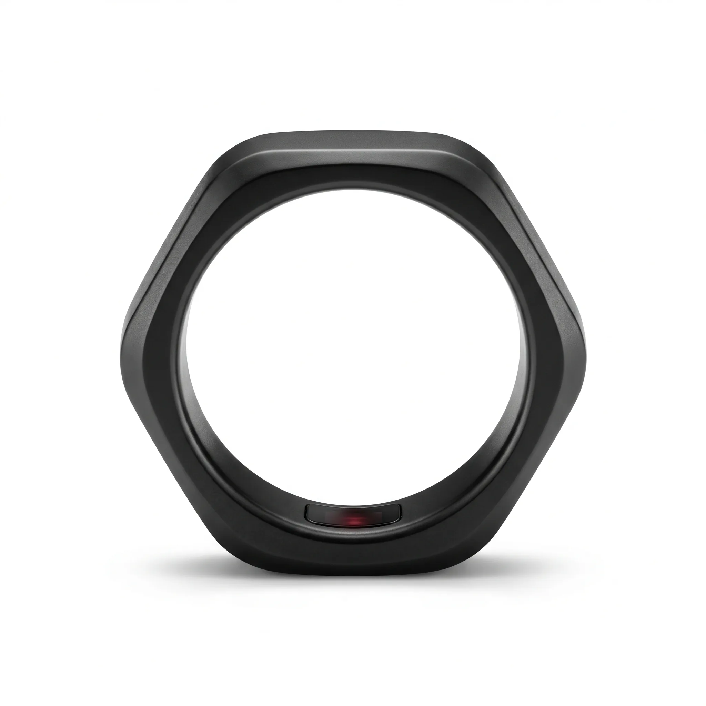
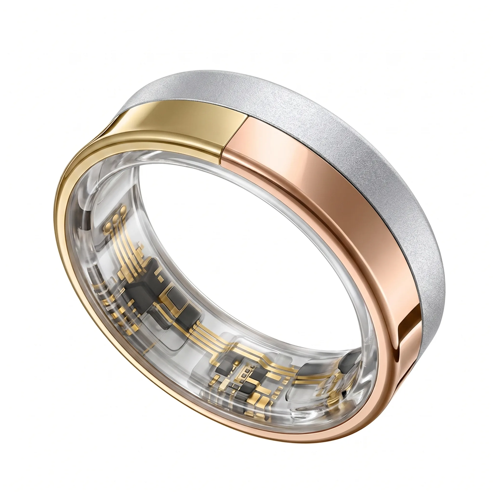
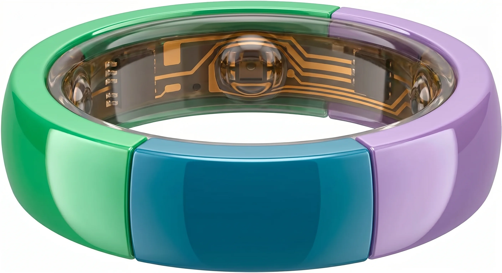
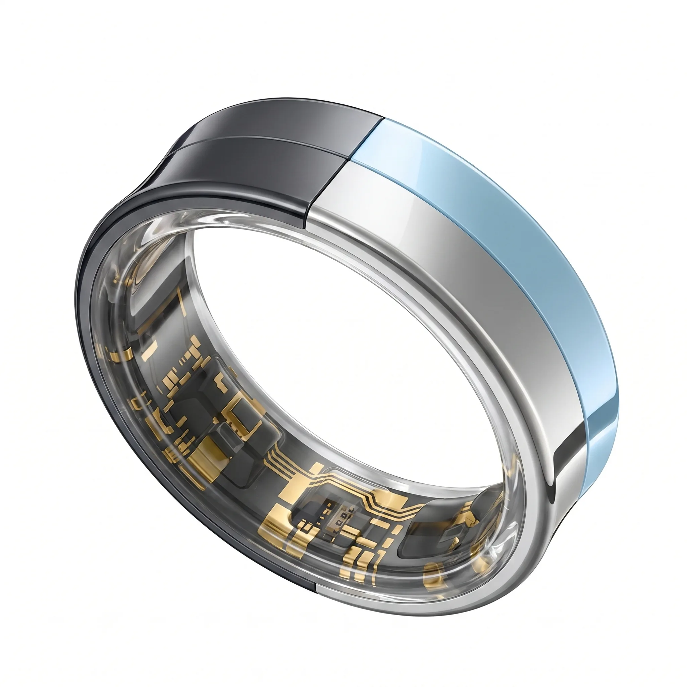
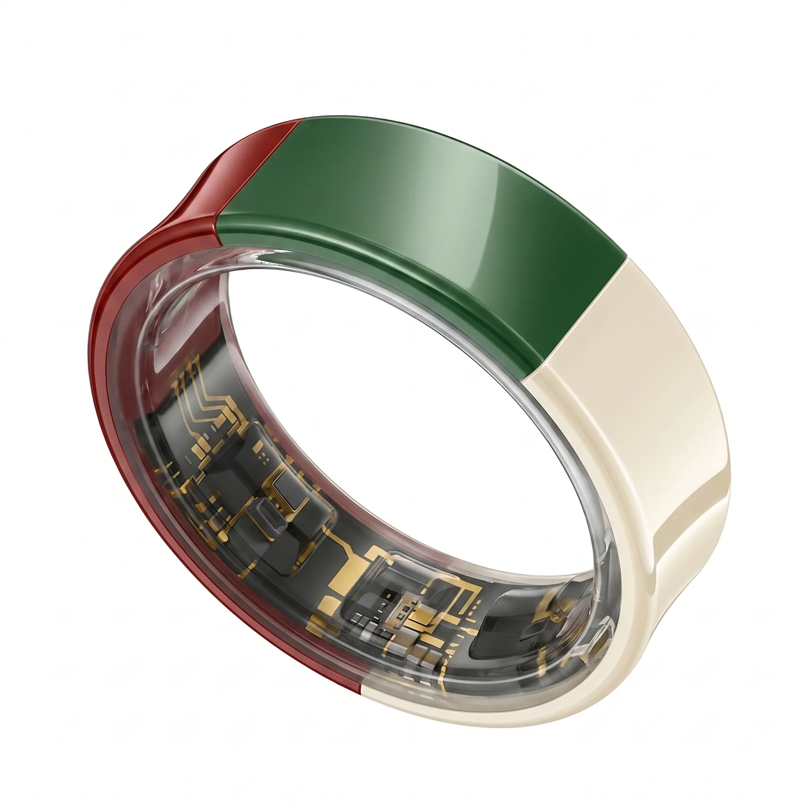
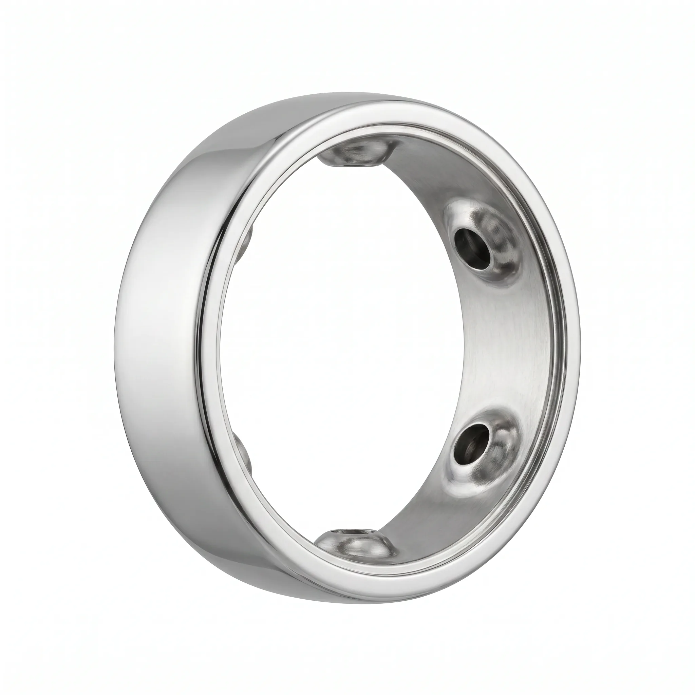
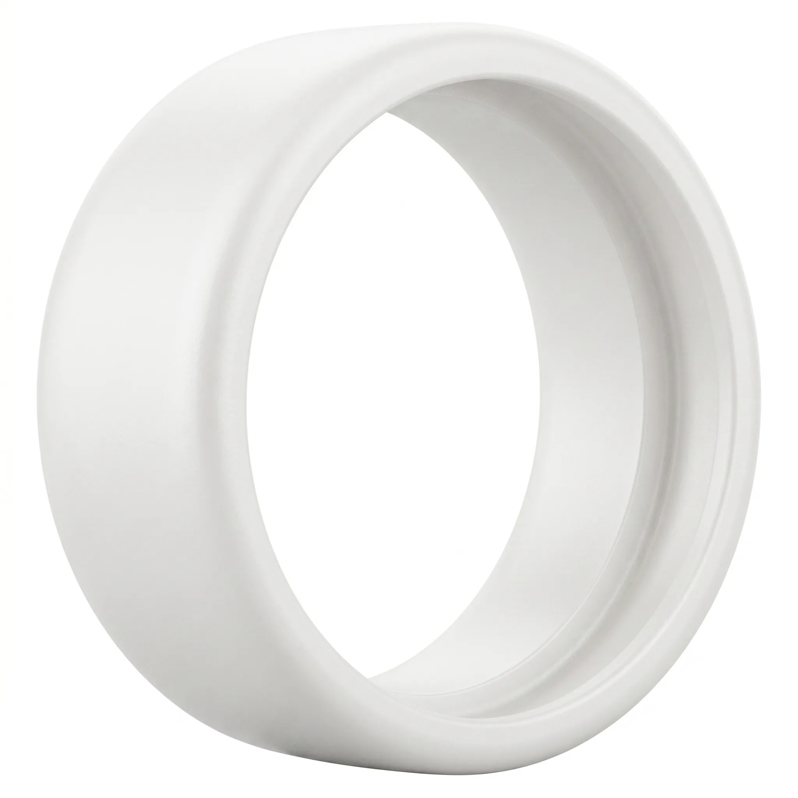

Materials Lab
Future Materials
for Smart Jewelry
Ceramic is not one material. It's a platform. 20+ colors. 10 surface finishes. Dual-color. Triple-color. Gradient. Marble. Luminescent. This is the core of the TALYX lab.
From Raw Material to Precision Form
Ceramic smart rings begin as engineered zirconia powder, compressed and sintered at 1,500°C. Every TALYX partner receives full visibility into the material journey — from blank to finished ring.

Raw Ceramic Blank Post-sintering zirconia. Density: 6.05 g/cm³. Hardness: 9H.
Precision Channel Milled ±5μm tolerance. Ready for PCB and sensor integration.
Finished Ceramic Ring Polished, assembled. A complete smart ring in pure ceramic.Why Ceramic? The Performance Difference
Smart ring material choice is not just aesthetic — it determines durability, comfort, signal transparency, and brand positioning. Here's how ceramic compares.
| Property | Titanium | Stainless Steel | TALYX Ceramic |
|---|---|---|---|
| Weight | Light (4.5 g/cm³) | Heavy (8.0 g/cm³) | Ultra-light (3.8 g/cm³) |
| Hypoallergenic | Yes | Contains nickel | 100% Biocompatible |
| Scratch Resistance | Moderate | Low | Exceptional (9H) |
| Signal Transparency | Signal blocking | Signal blocking | RF-transparent |
| Temperature Feel | Cold to touch | Cold to touch | Warm, skin-like |
| Color Range | Grey, black (PVD) | Silver, black (PVD) | 20+ custom colors |
| Multi-Color Capability | Not possible | Not possible | Dual & Triple fusion |
| Surface Finishes | 3-4 options | 3-4 options | 10 distinct finishes |
| Brand Differentiation | Low — commodity | Low — commodity | High — signature material |
20+ Ceramic Colors
Each color is a custom ceramic formulation — not a coating, not a paint, not a PVD layer. The color is the material. Pantone matching available for brand palette integration.
10 Surface Finishes
Material is half the story. The surface is what people touch. Each finish changes the way light, shadow, and skin interact with the ring.
Advanced Ceramic Techniques
These six techniques represent the frontier of ceramic smart ring design. Each is production-ready and available to TALYX partners.

Dual-Color Ceramic
Two precisely bonded ceramic tones in a single body. A clean seam at the equator creates a signature two-tone identity. Patent-pending fusion process.

Triple-Color Ceramic
Three-layer ceramic fusion. Enables complex brand palettes, gradient transitions, and design signatures impossible in any other material.

Gradient Ceramic
Continuous color transition across the ring body. From warm to cool, light to dark. No paint. No coating. The gradient is in the ceramic itself.

Marble Ceramic
Natural stone-like veining through ceramic. Every piece is unique. The material tells its own story. Perfect for luxury positioning.
Luminescent Ceramic
Glow-in-the-dark ceramic compounds. Charges from ambient light during the day. Emits a soft, ethereal glow in darkness. A completely new smart ring aesthetic. Custom glow colors available.
Inlay & Marquetry
Precision inlay of contrasting ceramic colors. Geometric patterns, brand logos, decorative motifs embedded within the ring body. Jewelry-level craftsmanship at smart-ring scale.
Where Ceramic Excels
Different smart jewelry categories demand different material properties. Here's where ceramic creates the strongest advantage.
Smart Rings
Weight + Signal
Ceramic is 15% lighter than titanium and RF-transparent — meaning sensors perform better through the material. Combined with the warm-to-touch feel, it's the ideal ring material.
Smart Pendants
Color + Luxury
Pendants are visible jewelry. The color, finish, and material quality are perceived instantly. Ceramic enables jewelry-house aesthetics that metal cannot match.
Smart Bracelets
Durability + Comfort
Bracelets endure constant contact and movement. Ceramic's scratch resistance and warm feel make it the most comfortable choice for all-day wear.
Smart Brooches
Expression + Identity
Brooches are pure expression. The full range of ceramic colors, finishes, and multi-layer techniques enables design freedom that defines brand identity.
Material Benchmark: Ceramic vs Titanium
We test every material against real smart ring requirements. Below: zirconia ceramic body compared to the titanium alloy alternative — both in raw blank form.

Titanium AlloyStandard material across most smart rings. Lightweight but blocks RF signals. Limited to grey/black PVD coating. Scratch-prone in daily wear.

Zirconia CeramicTALYX zirconia formulation. 15% lighter, RF-transparent, 20+ custom colors. Warm, skin-like touch. Virtually scratch-proof. The definitive smart ring material.
Get the Complete Material Catalog
TALYX Material Catalog
Full specifications for all 20+ ceramic colors, 10 surface finishes, and 6 advanced techniques. Includes physical sample request form, tolerance data, and application guidelines.